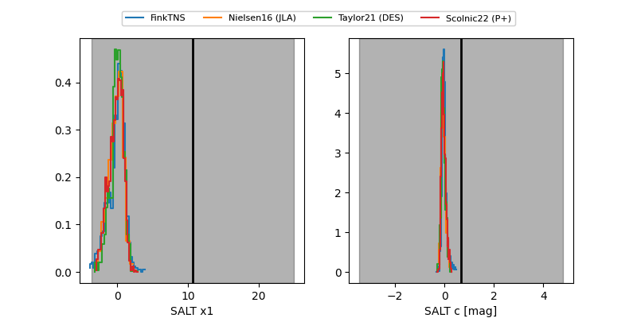

FINK: ZTF25abpfmfl
Lasair: ZTF25abpfmfl
ALeRCE: ZTF25abpfmfl
TNS: 2025xjo
YSE: 2025xjo
ZTF25abpfmfl (ztf,fink)
2025xjo (tns,yse)
equatorial (ra, dec) = (303.0499,-3.07617)
galactic (l, b) = (39.5895,-19.34153)

last ztfg=19.57
3 ztfg detections